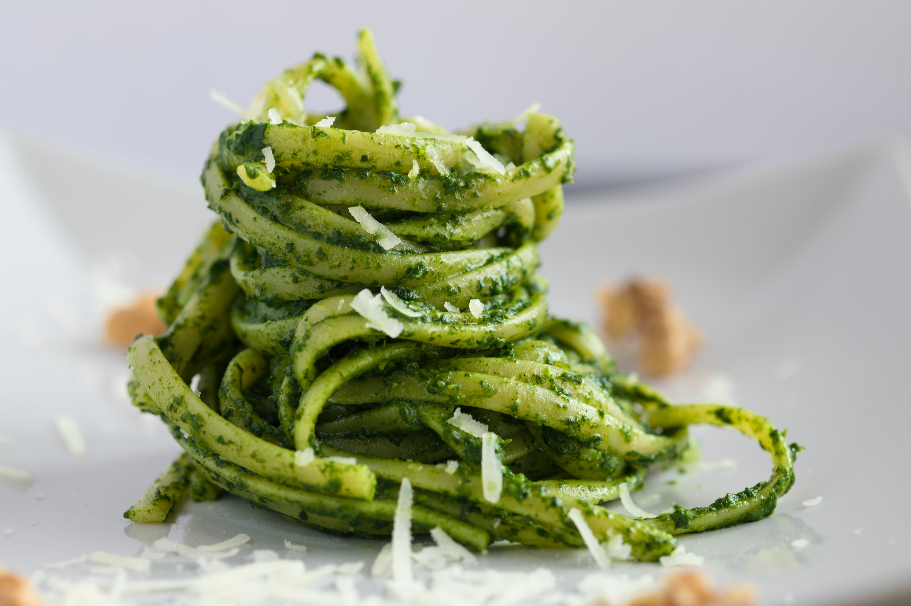

Pesto Pasta
The name pesto is the past participle of the Genoese verb pestâ (Italian: pestare), which means "to pound", "to crush", in reference to the original method of preparation. According to tradition, the ingredients are "crushed" or ground in a marble mortar through a circular motion of a wooden pestle. This same Latin root, through Old French, also gave rise to the English noun pestle.